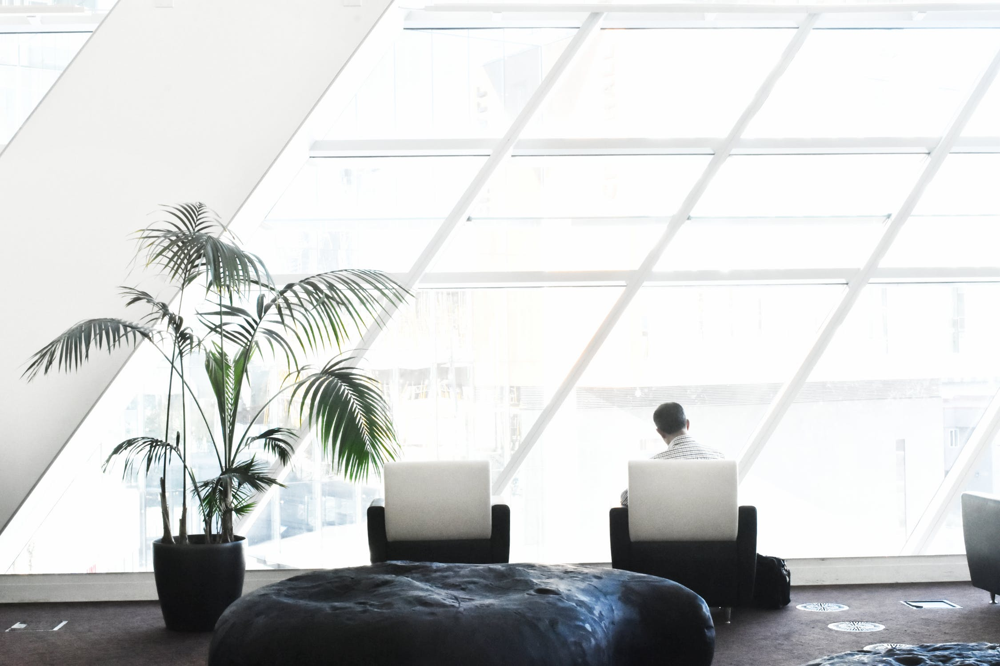

Welcome to the Art of Minimalism!
Here you can find tips and tricks on how to declutter and implement minimalism into your daily life. In the navigation bar, you have a quick access to some amazing minimalist creators on YouTube.| Rachel Aust | Click! |
| The Minimalists | Click! |
| Jenny Mustard | Click! |